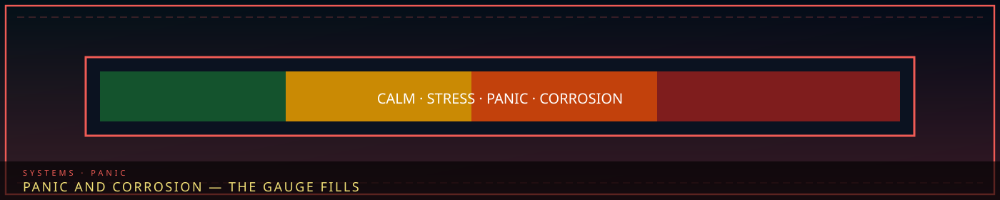
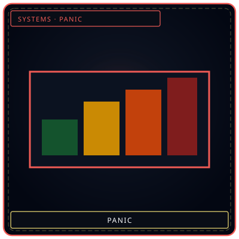
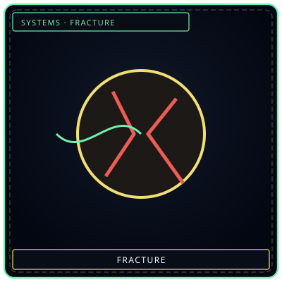
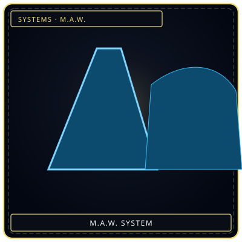

1. Sanity Points (SP) & Psychological Degradation
Every agent in Facility 01 possesses a Sanity Point (SP) gauge linked to their Clarity attribute. When an agent witnesses horrific entity breaches or takes White/Black Han damage, SP drains rapidly. If SP reaches 0, the agent enters a Panic State.
2. The Four Panic Behaviors
| Panic Behavior | Primary Stat Deficiency | Agent Action | Remedy Protocol |
|---|---|---|---|
| Murderous (살인) | Lowest Resilience | Attacks nearest allied personnel with assigned weapon | Subdue with White/Cyan SP recovery weapons |
| Wandering (방황) | Lowest Clarity | Runs aimlessly through hallways, opening containment doors | Intercept with Shadow Corps, tranquilize |
| Paralyzed (마비) | Lowest Composure | Freezes in place, taking 2.0x damage from all sources | Deploy ally to perform psychological rally |
| Fanatic (광신) | Lowest Resolve | Bow before breached Sorrow Entity, healing the entity | Execute or suppress before full corrosion |
3. M.A.W. Corrosion Transformation
If an agent wielding a Grade IV or V M.A.W. weapon remains in a Panic State for more than 30 seconds, the entity's consciousness fully overtakes the agent's nervous system, triggering M.A.W. Corrosion. The agent morphs into a hostile mini-boss requiring full lethal suppression.
“Calm is a room. Corrosion is what happens when the room is gone.”


GaugeCalm to corrosion
NextFracture if ignored
M.A.W. wearSorrow wears backHow this sits in canon
Panic is an agent failure state, not an Ordeal and not a Sorrow Entity. SP tracks Clarity. White/Black Han and witnessed breaches drain it. At 0 the four behaviors (murderous, suicidal, wandering, helpless — names as already tabled) take the body. M.A.W. Corrosion is a separate track: equipment that has drunk too much of its donor entity starts writing that entity’s habit onto the wearer.
Remedy is rest, transfer off the floor, and in extreme cases Core-adjacent counseling — not a Memory Wash. Washers erase; they do not restore SP. Keepers can store a panic memory; they should not be asked to delete it as treatment. See Han damage and M.A.W. extraction.
Do not confuse facility Panic with city Fracture. Fracture is a person becoming Han-structure. Panic is still a person, briefly unusable. An untreated panic loop is one of the documented roads into Fracture, which is why Internal Affairs and Insight Forge share the after-action.